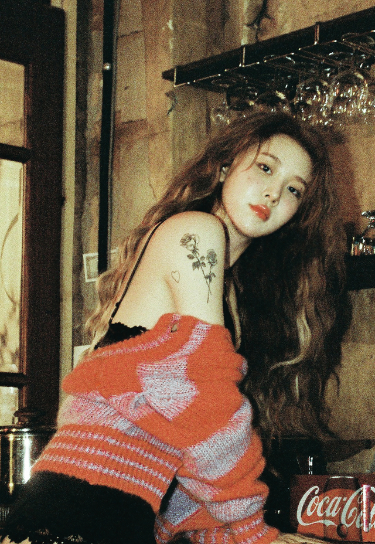
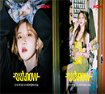

NEWS

백예린 딱 1년만에 정규 2집 컴백
뉴스컬처
-

백예린, '아웃나우'서 신곡 라이브...풍성 무대 예고
한국일보바로가기
-
'시카고 하우스'서 '드림팝'까지 백예린의 음악이 넓어졌다
동아일보바로가기
-

정규 2집으로 돌아오는 백예린 "새 장르 도전"
국방일보바로가기
-
백예린의 청순미 넘치는 일상 미모 "하트"
뉴스엔바로가기
-
백예린, 금발 헤어도 찰떡...역시 독보적인 분위기
마이데일리바로가기
-
백예린, 다시 한 번 영어앨범 낸다...전곡 작사작곡 참여
헤럴드경제바로가기